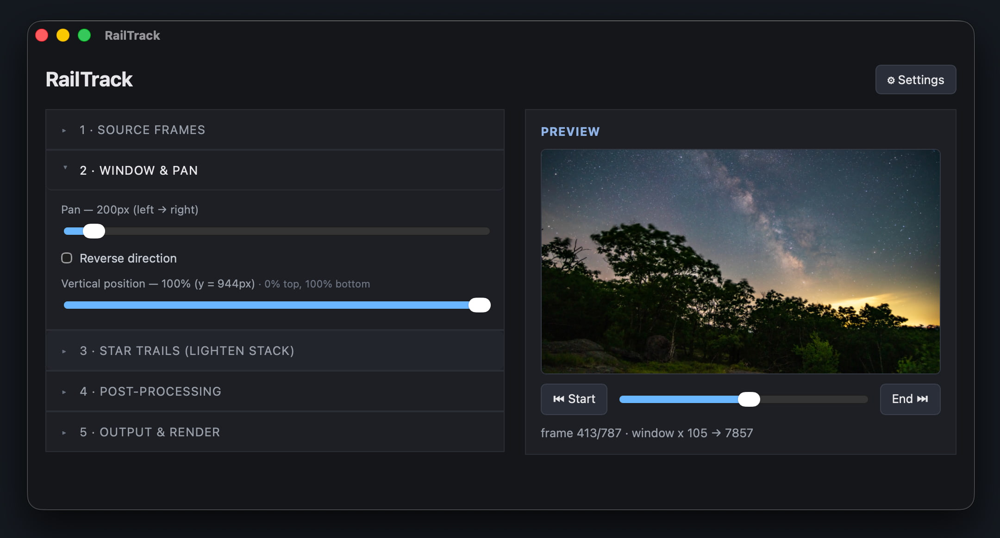

What it does
- Windowed pan — crop a 4K window out of much larger frames and glide it across the scene, sub-pixel smooth.
- Star trails — lighten-stack the stars, with adjustable persistence and a configurable start & end (trails grow, then retract or dissolve back to normal).
- Vertical / portrait — one checkbox flips the output (and the preview) to 9:16 for social.
- Denoise — clean up high-ISO night shots before stacking.
- Fast previews — a one-time proxy cache renders whole-timelapse previews in seconds.
- Flexible output — H.264 / H.265 / ProRes at your chosen resolution, fps, and quality.
Download
Opening the app: the builds aren't code-signed yet, so the first launch needs an extra step.
macOS: right-click the app → Open, or System Settings → Privacy & Security → Open Anyway (Apple's guide).
Windows: on the SmartScreen prompt, click More info → Run anyway.
macOS: right-click the app → Open, or System Settings → Privacy & Security → Open Anyway (Apple's guide).
Windows: on the SmartScreen prompt, click More info → Run anyway.